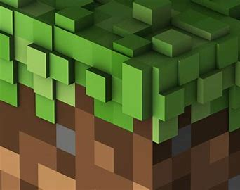

-

Minecraft – это популярная игра в жанре песочницы, созданная Mojang Studios. Вот основные аспекты игры: 1. Геймплей: - Выживание (Survival): Игроки добывают ресурсы, строят укрытия и борются с монстрами. - Творчество (Creative): Бесконечные ресурсы для строительства без опасности от монстров. - Приключения (Adventure): Режим с заданиями и ограниченными возможностями разрушения и строительства. 2. Блоки: - Мир Minecraft состоит из блоков различных типов, таких как земля, дерево, руды и другие материалы. - Блоки могут быть разрушены, перемещены и использованы для строительства. 3. Мобы: - Враждебные мобы: Зомби, скелеты, криперы и другие создания, атакующие игрока. - Дружелюбные мобы: Коровы, свиньи, волки и другие, которые не нападают. 4. Ресурсы и крафтинг: - Игроки добывают ресурсы (древесина, руды и др.) и используют их для создания инструментов, оружия, брони и блоков. 5. Биомы: - Разнообразные области с уникальной растительностью, местами и жителями. 6. Энд и Нижний мир: - Энд: Загадочный мир с драконом, который игроки могут победить. - Нижний мир: Подземный мир с лавой, рудами и особыми созданиями. 7. Режимы игры: - Онлайн-многопользовательство через сервера. - Различные режимы, включая выживание, креатив и приключения. 8. Обновления: - Регулярные обновления добавляют новые блоки, предметы, механики и миры. 9. Моды и плагины: - Сообщество создает разнообразные моды и плагины для изменения игрового опыта. 10. Образовательный потенциал: - Minecraft также используется в образовании для развития творческих и логических навыков у детей. Это общий обзор Minecraft, но есть еще множество деталей и возможностей, которые делают игру уникальной и увлекательной.